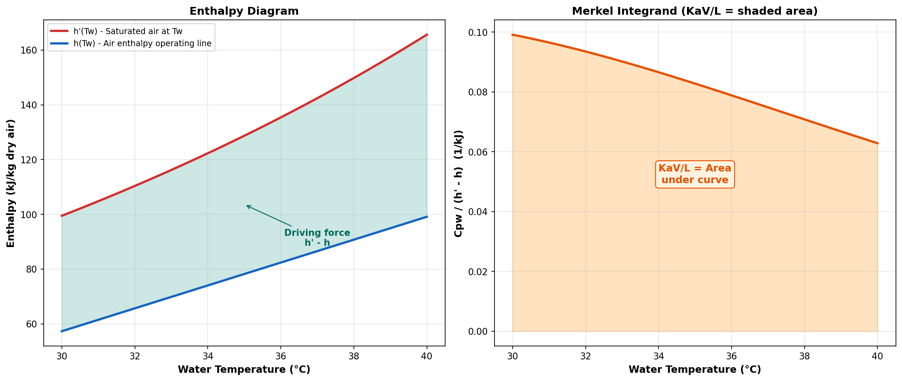

Merkel Method¶
Historical Background¶
The Merkel method was proposed by Friedrich Merkel in 1925 in his doctoral dissertation at the Technische Hochschule Dresden. It remains the most widely used method for cooling tower thermal design and is the standard adopted by the Cooling Technology Institute (CTI) for acceptance testing.
The method's key simplification — assuming that the Lewis factor equals unity — allows the simultaneous heat and mass transfer equations to be combined into a single ordinary differential equation (ODE) in terms of enthalpy driving force.
Governing Equation¶
The Merkel equation expresses the tower characteristic (KaV/L) as an integral over the cooling range:
where:
| Symbol | Description | Units |
|---|---|---|
| \( K \) | Overall mass transfer coefficient | kg/(m²·s) |
| \( a \) | Wetted surface area per unit volume | m²/m³ |
| \( V \) | Active fill volume | m³ |
| \( L \) | Water mass flow rate | kg/s |
| \( c_{pw} \) | Specific heat of water | kJ/(kg·K) |
| \( T_w \) | Water temperature (integration variable) | K or °C |
| \( h'_s(T_w) \) | Enthalpy of saturated air at water temperature | kJ/kg d.a. |
| \( h_a(T_w) \) | Enthalpy of air at that elevation in the tower | kJ/kg d.a. |

Assumptions¶
The Merkel method makes three important simplifications (Baker & Shryock, 1961):
-
Lewis factor = 1: The ratio of heat to mass transfer coefficients is unity, allowing sensible and latent heat transfer to be combined.
-
Neglect of evaporation loss: The water mass flow rate is assumed constant throughout the tower (\( \dot{m}_w = \text{const} \)). In reality, approximately 1-3% of the water evaporates.
-
Saturated air exit: The exit air is assumed to be saturated (100% RH). This is an implicit consequence of the combined enthalpy driving force formulation.
Important: No L/G Factor in the Integrand
The Merkel integrand contains only \( c_{pw} / (h'_s - h_a) \). The L/G ratio does not appear inside the integral. It appears only in the air enthalpy update equation (operating line). This is a common source of implementation errors — see Baker & Shryock (1961), Equation 30a.
Air Enthalpy Operating Line¶
As the integration proceeds from \( T_{w,out} \) to \( T_{w,in} \), the air enthalpy is updated incrementally:
The initial condition is:
where \( h_{a,inlet} \) is the enthalpy of the ambient air entering the tower at the bottom (determined by the wet-bulb and dry-bulb temperatures).
The slope of the operating line on the enthalpy-temperature diagram is:
This means a higher L/G ratio produces a steeper operating line, pushing it closer to the saturation curve and increasing the required KaV/L.
Derivation from First Principles¶
Starting from the energy balance on a differential element of the tower:
Water side (energy released): [ dQ = L \cdot c_{pw} \cdot dT_w ]
Air side (energy absorbed — Merkel approximation with \( Le_f = 1 \)): [ dQ = K \cdot a \cdot (h'_s - h_a) \cdot dV ]
Equating both sides: [ L \cdot c_{pw} \cdot dT_w = K \cdot a \cdot (h'_s - h_a) \cdot dV ]
Rearranging: [ \frac{K \cdot a \cdot dV}{L} = \frac{c_{pw} \cdot dT_w}{h'_s - h_a} ]
Integrating from \( T_{w,out} \) to \( T_{w,in} \):
Numerical Evaluation¶
The Merkel integral cannot be evaluated analytically because both \( h'_s(T_w) \) and \( h_a(T_w) \) are nonlinear functions of temperature. Several numerical methods are used in practice:
Chebyshev 4-Point Method (CTI Standard)¶
The Cooling Technology Institute uses a 4-point Chebyshev quadrature:
evaluated at: [ T_i = T_{w,out} + p_i \cdot (T_{w,in} - T_{w,out}) ]
with \( p_1 = 0.1, \; p_2 = 0.4, \; p_3 = 0.6, \; p_4 = 0.9 \).
Simpson's Rule (This Implementation)¶
This DWSIM unit operation uses Simpson's 1/3 rule for higher accuracy:
with \( h = (b-a)/n \) and \( n \) even (default: 50 intervals).
Simpson's Rule Advantage
Simpson's rule has 4th-order convergence (\( O(h^4) \)), compared to 2nd-order for the trapezoidal rule. With 50 intervals, the numerical error is negligible (< 0.001%).
Implementation Details¶
Algorithm (Design Mode)¶
Input: Tw_in, Tw_out, Twb, Tdb, L/G, Patm
Output: Required KaV/L
1. Compute inlet air humidity ratio w_in from (Tdb, Twb, Patm)
2. Compute inlet air enthalpy h_a = 1.006*Tdb + w_in*(2501 + 1.86*Tdb)
3. Set integration bounds: [Tw_out, Tw_in]
4. Ensure N is even; set dTw = (Tw_in - Tw_out) / N
5. Initialize: ima = h_a_in, w = w_in
6. For each integration point i = 0, 1, ..., N:
a. Tw_i = Tw_out + i * dTw
b. Compute h'_s(Tw_i) = saturation enthalpy at Tw_i
c. Compute Cpw(Tw_i) = temperature-dependent water specific heat
d. deltaH = h'_s(Tw_i) - ima
e. f_i = Cpw / deltaH
f. Apply Simpson coefficient (1, 4, 2, 4, ..., 4, 1)
g. Update: ima += (L/G) * Cpw * dTw
h. Update: w += (L/G) * Cpw * dTw / h_fg(Tw_i)
7. KaV/L = (dTw / 3) * sum(coefficients * f_i)
Algorithm (Rating Mode)¶
Input: Tw_in, KaV/L_known, Twb, Tdb, L/G, Patm
Output: Tw_out (water outlet temperature)
1. Set bounds: Tw_low = Twb + 0.1, Tw_high = Tw_in - 0.1
2. Bisection loop (max 200 iterations):
a. Tw_trial = (Tw_low + Tw_high) / 2
b. Compute KaV/L_calc using Design algorithm with Tw_out = Tw_trial
c. If KaV/L_calc > KaV/L_known: Tw_low = Tw_trial (tower overcools)
d. Else: Tw_high = Tw_trial
e. Converge when |Tw_high - Tw_low| < 0.0001 K
3. Return Tw_out = (Tw_low + Tw_high) / 2
References¶
-
Merkel, F. Verdunstungskuhlung. VDI-Zeitschrift, Vol. 70, pp. 123-128, 1925.
-
Baker, D.R. and Shryock, H.A. "A Comprehensive Approach to the Analysis of Cooling Tower Performance." ASME Journal of Heat Transfer, Vol. 83(3), pp. 339-349, 1961. https://doi.org/10.1115/1.3682276
-
Cooling Technology Institute. CTI ATC-105: Acceptance Test Code for Water Cooling Towers. CTI, Houston, TX, 2000. https://www.cti.org/
-
Kloppers, J.C. and Kroger, D.G. "A critical investigation into the heat and mass transfer analysis of counterflow wet-cooling towers." International Journal of Heat and Mass Transfer, Vol. 48(3-4), pp. 765-777, 2005. https://doi.org/10.1016/j.ijheatmasstransfer.2004.09.004